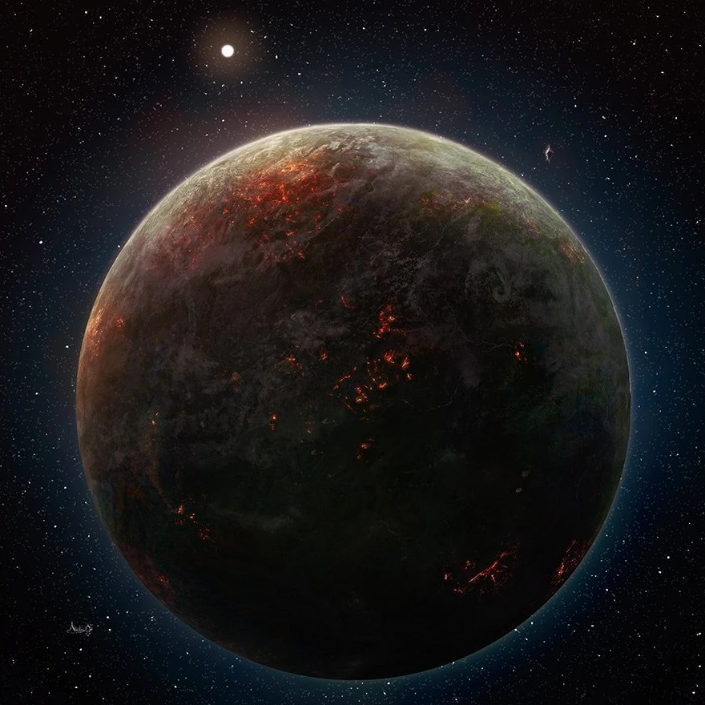

Caliban
| Caliban | |
|---|---|
| Homeworld of the Lion and the I Legion | |
 Caliban burning in its last days, from a reconstruction held by the Inner Circle Artwork © Games Workshop | |
| System | Caliban System (location classified) |
| Segmentum | Segmentum Obscurus |
| Classification | Death world (destroyed) |
| Ruler | Formerly the Order and the Lion; Luther as master of Caliban during the Heresy. Now none |
| Population | Several million (formerly); none |
| Capital | Aldurukh, fortress-monastery of the Order |
| Status | Destroyed c. M31; one fragment survives as The Rock |
| Notable features | The Northwilds; the Great Beasts; the knightly orders |
Caliban was a forested death world of the Segmentum Obscurus and the homeworld of the primarch Lion El'Jonson and of the I Legion, the Dark Angels. Its forests were inhabited by monstrous creatures, the Great Beasts, and its people lived in fortress-monasteries ruled by orders of knights. The Lion grew up there, was found by the knight Luther, and led the crusade that cleared the forests of the Beasts before the Emperor came.[1][2]
Caliban was destroyed at the end of the Horus Heresy, in a battle between the Lion and the forces left on the planet under Luther, who had turned against him. Only a fragment survived, holding the fortress-monastery of Aldurukh, which became the Dark Angels' mobile fortress, The Rock. The circumstances of the planet's end are the most closely guarded secret of the Dark Angels and their Successors, and the source of their name, the Unforgiven.[2][3]
History
[edit]The forest world
[edit]Caliban was settled in the Dark Age of Technology, but its settlers declined into a feudal society during the Age of Strife. By the late 30th millennium its population lived in fortified settlements in the forest clearings, governed by knightly orders whose members trained from childhood to fight the Great Beasts. The orders lived in fortress-monasteries and observed codes of honour and chivalry; the common people farmed, hunted and served them.[2]
The Great Beasts were huge predators of many kinds, and the forests' darkest parts, the Northwilds among them, were dangerous to enter. Later Dark Angels scholars have argued that the Beasts and the menace of the forests were the work of Chaos, which had touched the planet long before the Imperium came. This is the view of the Inner Circle.[2][a]
The Lion and the Order
[edit]
The capsule carrying the infant Lion came down in the Northwilds. He grew up alone in the forest, surviving by his own strength, and was found as a young man by a hunting party of knights led by Luther. Luther brought him to the fortress of the Order, a knightly order that took in men of any birth, and the two became brothers in arms.[1]
The Lion, with Luther at his side, led the Order in a crusade to exterminate the Great Beasts. The other knightly orders joined it or were absorbed, and by its end the forests had been cleared of the Beasts and the Lion and the Order ruled Caliban. The orders' fortresses, including Aldurukh, the Order's own seat, became the centres of government.[2]
The Great Crusade
[edit]When the Emperor reached Caliban, the Lion took command of the I Legion, and Caliban became its homeworld. The Legion recruited from the knights and youths of the planet, who brought their codes and orders into the Legion. Luther followed the Lion into the Legion and served at his side in the early years of the Great Crusade. Later, he was sent back to Caliban to command the garrison and oversee recruitment. Dark Angels accounts describe this as the result of the Lion's suspicion, Luther's ambition or both, and Luther came to resent it.[2][1]
The Horus Heresy and the destruction
[edit]During the Horus Heresy, Caliban was cut off from the Legion's main fleet. Luther, influenced by agents of Chaos, and the Calibanite warriors who had been left with him, turned against the Lion. When the primarch returned to Caliban after the Siege of Terra, his fleet was fired on from the surface. The Lion ordered a bombardment and landed to confront Luther at Aldurukh, where the two fought.[2][3]

The bombardment and the warp storm that broke out during the duel tore the planet apart. Most of the surface was destroyed. The traitors who had followed Luther were scattered through space and time by the warp, becoming the Fallen. The Lion was lost, and Luther was found by the Dark Angels in the ruins, insisting that the Watchers in the Dark had taken the primarch away and that the Lion would return. A fragment of the planet's crust, held together by Aldurukh's defences, survived and was converted into the Rock.[2][3]
Accounts differ on almost every point of this story. The Dark Angels' own tradition blames Luther and the Fallen alone; the Fallen claim the Lion destroyed his world in his anger; and records preserved by the Inquisition describe divisions among the Dark Angels that began before the Lion's return. The full account is known only to the Supreme Grand Master and the Inner Circle.[3]
Aftermath
[edit]
The remains of Caliban form an asteroid field in a system whose location the Dark Angels have kept secret. The Rock, propelled by warp engines, has carried the Chapter's Inner Circle, its Deathwing and its Ravenwing across the galaxy ever since. Beneath it, Luther was kept a prisoner for ten thousand years, and the Watchers in the Dark guarded a chamber in its depths.[2]
The Dark Angels and their Successors have hunted the Fallen ever since, and that hunt has shaped the Chapter's history and its relations with the rest of the Imperium. Caliban itself survives in their memory, in the names of their companies and relics, and in the customs of their knightly orders.[2]
The Era Indomitus
[edit]In the Era Indomitus the Lion returned. He woke in a forest on a world of the Imperium Nihilus and, according to reports collected by the Dark Angels, found that he could travel between the forests of many worlds by paths that seemed to recall the woods of Caliban. He gathered loyal followers, including some of the Fallen who repented, and later returned to the Dark Angels during the Arks of Omen campaign. The Lion has not recovered Caliban, and Imperial records do not show that he has visited the remains of the planet.[4][b]
Geography
[edit]Caliban was a world of deep, ancient forests broken by clearings, rivers and mountains. Its climate was temperate, and its forests were so dense and so dark that they were rarely entered except by armed parties. The Northwilds were the wildest region. The fortress-monasteries of the knightly orders, many of them built into mountains and protected by walls and towers, were the planet's principal settlements, and towns and villages grew up around them.[2]
Society
[edit]Calibanite society was feudal. The knightly orders held power, recruiting both noble and common boys, though some orders admitted only the high-born. Knights were trained from childhood in swordsmanship, riding and the hunting of the Great Beasts, and were bound by oaths of fealty and codes of chivalry. The orders often fought one another. The Order, the Lion's own, was notable for admitting candidates of any birth.[2]
Much of the Dark Angels' identity descends from these traditions: the Deathwing and Ravenwing companies, the use of swords and robes, the Chapter's hierarchy of circles and secrets, and the knightly titles of its officers. The Chapter's Successors, the Unforgiven, preserve the same customs.[2]
Timeline
[edit]| Date | Event |
|---|---|
| Age of Technology | Caliban is settled by Humanity and its population grows under a technological society.[c] |
| Age of Strife | Caliban is cut off from the rest of Mankind by Warp storms and its people fall into a semi-feudal order.[d] |
| c. 798.M30 | The Great Crusade reaches Caliban; Lion El'Jonson is taken into the Emperor's service.[e] |
| c. 798–800.M30 | Luther remains as garrison commander of the Dark Angels on Caliban while the Chapter's primarch fights the Crusade.[f] |
| Late M30 | The Dark Angels' 4th Expeditionary Fleet is placed in orbit of Sarosh, where its people secretly worship the Chaos Gods.[g] |
| 005.M31 | The Horus Heresy begins at Isstvan III; Luther turns against the Emperor on Caliban. |
| 013–014.M31 | The Siege of Terra ends the Heresy; Lion El'Jonson returns to Caliban with the Dark Angels fleet. |
| c. 014.M31 | Caliban's orbital defences fire on the returning fleet; the Battle of Caliban destroys the planet in a conflagration.[h] |
| M31 onward | Caliban lies as a ruined world, and the Dark Angels carry its fall as a central part of their history. |
See also
[edit]Notes
[edit]- ^ The Inner Circle's records describe corruption in the deep forests and in the Beasts themselves. Earlier and more widely copied accounts treat the Beasts simply as animals. Whether Caliban was already tainted when the Lion arrived is debated within the Chapter's sealed archives.
- ^ The Lion's reported travels through forests between worlds are described in Dark Angels and Imperial reports but have not been explained. The Adeptus Mechanicus and the Inquisition have both investigated them without result.
- ^ Estimated; no record gives an exact year.
- ^ Estimated; no record gives an exact year.
- ^ Estimated; no record gives an exact year.
- ^ Estimated; no record gives an exact year.
- ^ Estimated; no record gives an exact year.
- ^ Estimated; no record gives an exact year.
References
[edit]- ^ a b c Thorpe, Gavin. Angels of Darkness (novel). Black Library. Scanlon, Mitchel. Descent of Angels (novel). Black Library.
- ^ a b c d e f g h i j k l m Lee, Mike. Fallen Angels (novel). Black Library. Codex: Dark Angels (6th Edition), pp. 6-12, 18-19, 26, 47. Games Workshop.
- ^ a b c d Warhammer 40,000 Rulebook (5th Edition), p. 129. Games Workshop. Codex: Dark Angels (4th Edition). Games Workshop.
- ^ Codex: Dark Angels (3rd Edition). Games Workshop. Codex: Angels of Death (2nd Edition). Games Workshop.